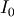

numpy.i0¶
- numpy.i0(x)¶
Modified Bessel function of the first kind, order 0.
Usually denoted . This function does broadcast, but will not “up-cast” int dtype arguments unless accompanied by at least one float or complex dtype argument (see Raises below).
Parameters : x : array_like, dtype float or complex
Argument of the Bessel function.
Returns : out : ndarray, shape = x.shape, dtype = x.dtype
The modified Bessel function evaluated at each of the elements of x.
Raises : TypeError: array cannot be safely cast to required type :
If argument consists exclusively of int dtypes.
See also
scipy.special.iv, scipy.special.ive
Notes
We use the algorithm published by Clenshaw [R28] and referenced by Abramowitz and Stegun [R29], for which the function domain is partitioned into the two intervals [0,8] and (8,inf), and Chebyshev polynomial expansions are employed in each interval. Relative error on the domain [0,30] using IEEE arithmetic is documented [R30] as having a peak of 5.8e-16 with an rms of 1.4e-16 (n = 30000).
References
[R28] (1, 2) C. W. Clenshaw, “Chebyshev series for mathematical functions,” in National Physical Laboratory Mathematical Tables, vol. 5, London: Her Majesty’s Stationery Office, 1962. [R29] (1, 2) M. Abramowitz and I. A. Stegun, Handbook of Mathematical Functions, 10th printing, New York: Dover, 1964, pp. 379. http://www.math.sfu.ca/~cbm/aands/page_379.htm [R30] (1, 2) http://kobesearch.cpan.org/htdocs/Math-Cephes/Math/Cephes.html Examples
>>> np.i0([0.]) array(1.0) >>> np.i0([0., 1. + 2j]) array([ 1.00000000+0.j , 0.18785373+0.64616944j])